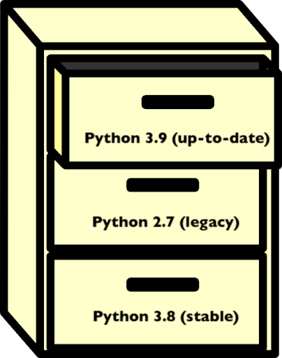

All in One View
Content from Introduction to Data Python Data Analysis Projects
Last updated on 2026-02-11 | Edit this page
Estimated time: 0 minutes
Overview
Questions
- What are common features of a project?
- What do I need to do to get my project shared?
- What will this lesson cover
Objectives
- Categorize pieces of code and organize them for efficient future use
- Identify components of a complete project
This episode will introduce the various tools that will be taught throughout the lesson and how the components relate to one another. This will set the foundation and motivation for the lesson.
A Data Analysis Project
Exercise
In small groups, describe all of the steps you might go through in developing a project, how it could work, and the things you want your project to do. Then discuss problems you anticipate or have had.
The rest of the episode adds them
Workflows, project stages, and common challenges
- collaboration
- work on multiple computers
- promote the work
- Make file:
- Pipeline tools
- backup
Data and Code
- Different back up needs, different space requirements
- Different sharing needs
- Shared server examples
- scripts, numerical experiments, plotting(that get narrative)
- things that are project specific
- things that are method-related might be reused
- these can be grouped as a package for install and then imported
- can become citable: Zenodo, get a DOI
- Data documentation, who , where, when, why: Mozilla has a checklist
Environments
- the set of requirements and dependencies
- what version of different software and packages
- don’t need to track it ourselves, the environment is like a wrapper
- many different managers; one is conda
Documentation
- demonstrate and publicize what you did (beyond an academic paper)
- help your team use your code
- clarify your thinking to do it in real time
- multiscale: overview, details,
- need to write the parts in natural language; but don’t need to work on the infrastructure, tools can do that for you
Why do good practices matter?
Lots of things can work and following “best” practices can take a lot of extra time. Why should we follow them and seek them?
- Jupytercon talk
on issues about the problems with notebooks
- hidden states
- more risk for beginners
- bad habits
- hinder reproducibility
- automation tools are based on good practices: a little bit of good,
helps fancy stuff be easy
- sphinx autodocs
- Projects have common structures
- Packaging enables a project to be installed
- An environment allows different people to all have the same versions and run software more reliably
- Documentation is an essential component of nay complete project and should exist with the code
Content from Setting up a Project
Last updated on 2026-02-11 | Edit this page
Estimated time: 0 minutes
Overview
Questions
- How do I set up a project in practice?
- What organization will help support the goals of my project?
- What additional infrastructure will support opening my project
Objectives
- Create a project structure
- Save helper excerpts of code
Project Organization
Now that we’ve brainstormed the parts of a project and talked a little bit about what each of them consists of. How should we organize the code to help our future self and collaborators?
There isn’t a specific answer, but there are some guiding principles. There are also some packages that create a basic setup for you. These are helpful for getting started sometimes, if you are building something that follows a lot of standards, but do not help you reorganize your existing ode.
We will begin in this section talking about how to start from scratch, noting that often the reality is that you have code and want to organize and sort it to be more functional. We start from clean to give you the ideas and concepts, then we’ll return to how to sort and organize code into the bins we created.
Exercise
Let’s look around on GitHub for some examples and compare and contrast them.
Here are some ideas to consider:
Questions
- What files and directory structures are common?
- Which ones do you think you could get started with right away?
- What different goals do they seem to be organized for?
So next we think about how these ideas and which of these and talk about some specific advice in each topic.
File Naming
This is the least resistence step you can take to make your code more reusable. Naming things is an important aspect of programming. This Data Carpentry episode provides some useful principles for file naming.
These are the three main characteristics of a good file name:
- Machine readable
- Human readable
- Plays well with default ordering
Guiding Principles
There are numerous resources on good practices for starting and developing your project, such as:
- NeurIPS Tips for Publishing Research Code
- GitHub’s Open Source Guide
- Good Enough Practices in Scientific Computing (PLoS Comp Bio)
In this lesson, we are going to create a project that attempts to abide by the guiding principles presented in these resources.
Setting up a project
Sometimes we get to start from scratch. So we can set up everything from the beginning.
Templates
For some types of projects there are tools that generate the base structure for you. These tools are sometimes called “cookie cutters” or simply project templates. They are available in a variety of languages, and some examples include:
For our lesson, we will be manually creating a small project. However, it will be similar to the examples above.
BASH
git clone
cd project
mkdir data
mkdir docs
mkdir experiments
mkdir package
touch setup.py
touch README.mdExercise
Make each of the following files in the project in the correct
location by replacing the __ on each line
BASH
touch __/raw_data.csv # raw data for processing
touch __/generate_figures.py # functions to create figures for presentation/publication
touch __/new_technique.py # contains the novel method at the core of your publication
touch __/reproduce_paper.py # code to re-run the analyses reported in your methods paper about the package
touch __/helper_functions.py # auxilliary functions for routine tasks associated with the novel method
touch __/how_to_setup.md # details to help others prepare equivalent experiments to those presented in your paperWhere to store results?
A question that we may ask ourselves is where to store our
results, that is, our final, processed data. This is
debatable, and depends on the characteristics of our project. If we have
many intermediate files between our raw data and final results, it may
be interesting to create a results/ directory. If we only
have a couple of intermediate files, we could simply store our results
in the data/ directory. If we generate many figures from
our data, we could create a directory called figures/ or
img/.
Configuration files and .gitignore
The root of the project, i.e. the project
folder containing all of our subdirectories, may also contain
configuration files from various applications. Some types of
configuration files include:
-
.editorconfig, that interacts with text editors and IDEs; -
.ymlfiles that provide settings for web services (such as GitHub Actions); - the
.gitignorefile, that specificies which files should be ignored by Git version control.
The .gitignore is particularly useful if we have large
data files, and don’t want them to be attached to our package
distribution. To address this, we should include instructions or scripts
to download the data. Results should also be ignored. For our example
project, we could create a .gitignore file:
And add the following content to it:
data/*.csvThis would ignore the data/raw_data.csv file, preventing
from adding it to version control. This can be very important depending
on the size of our data! We don’t want the user to have to download very
large files along with our repository, and it may even cause problems
with hosting services. If a results/ subdirectory was
created, we should also add that to the .gitignore
file.
Open Source Basics, MWE
Open source guidelines are generally written to be ready to scale. Here we propose the basics to get your project live and usable vs. things that will help if it grows and builds a community, but n
README
A README file is the first information about your project most people will see. It should encourage people to start using it and cover key steps in that process. It includes key information, such as:
- What the project does
- Why the project is useful
- How users can get started with the project
- Where users can get help with the project
- Who maintains and contributes to the project
- How to repeat the analysis (if it is a data project)
If you are not sure of what to put in your README, these bullet points are a good starting point. There are many resources on how to write good README files, such as Awesome README.
Exercise
Choose 2 README files from the Awesome README gallery examples or from projects that you regularly use and discuss with a group:
- What are common sections?
- What is the purpose of the file?
- What useful information does it contain?
Licenses
As a creative work, software is subject to copyright. When code is published without a license describing the terms under which it can be used by others, all of the author’s rights are reserved by default. This means that no-one else is allowed to copy, re-use, or adapt the softwarewithout the express permission of the author. Such cases are surprisingly common but, if you want your methods to be useful to, and used by, other people you should make sure to include a license to tell them how you want them to do this.
Choosing a license for your software can be intimidating and confusing, and you should make sure you feel well-informed before you do so. This lesson and the paper linked from it provide more information about why licenses are important, which are in common use for research software, and what you might consider when choosing one for your own project. Choosealicense.com is another a helpful tool to guide you through this process.
Exercise
Using the resources linked above, compare the terms of the following licenses:
What do you think are the benefits and drawbacks of each with regards to research software?
Discuss with a partner before sharing your thoughts with the rest of the group.
Open Source, Next Steps
Other common components are
- code of conduct
- contributing guidelines
- citation
Even more advanced for building a community
- issue templates
- pull request templates
- pathways and personas
For training and mentoring see Mozilla Open Leaders. For reading, check out the curriculum.
Re-organizing a project
Practice working on projects
To practice organising a project, download the Gapminder example project and spend a few minutes organising it: create directories, move and rename files, and even edit the code if needed. Be sure to have a glance at the content of each file. To download it, either use [this link][example-project-zip] to download a ZIP file or clone the repository.
A possible way to organise the project is in the project’s
tidy branch. You can open the tidy branch on
GitHub by clicking on [this link.][tidy-branch] Discuss: what is
different from the version you downloaded?
- How are directories organised?
- Where is each file located?
- Which directory represents a Python package?
[example-project-zip]: [example-project-zip]: https://github.com/vinisalazar/example-python-project/archive/refs/tags/v0.0.1.zip [tidy-branch]: https://github.com/vinisalazar/example-python-project/tree/tidy
- Data and code should be governed by different principles
- A package enables a project to be installed
- An environment allows different people to all have the same versions and run software more reliably
- Documentation is an essential component of nay complete project and should exist with the code
Content from Packaging Python Projects
Last updated on 2026-02-11 | Edit this page
Estimated time: 0 minutes
Overview
Questions
- How do I use my own functions?
- How can I make my functions most usable for my collaborators?
Objectives
- Identify the components of a Python package
- Apply a template for packaging existing code
- Update the packaged project after modifying the code
- Install and update a local or GitHub-hosted package
Recall: Functions
When we develop code for research, we often start by writing
unorganized code in notebook cells or a script. Eventually, we might
want to re-use the code we wrote in other contexts. In order to re-use
code, it is helpful to organize it into functions and classes in
separate .py files. We call these files
modules, and will soon go into more detail about them.
Whenever we refer to a module in Python, we can think
of it as as .py file that has other code, typically
functions or other objects, in it.
For example, say we are making a program that deals with temperature date. We have a function to convert from degrees Fahrenheit to Celsius:
PYTHON
def fahr_to_celsius(temperature):
"""
Function to convert temperature from fahrenheit to Celsius
Parameters
-------------
temperature : float
temperature in Fahrenheit
Returns
--------
temperature_c : float
temperature in Celsius
"""
return (temperature - 32) * (5 / 9)We use this function a lot, so we don’t want to have to copy and paste it every time. Instead, we can store it in a module and import it from there. You have probably imported modules or functions before, this time we will do that for our own code!
Pip
Pip is the most common package manager for Python. Pip allows you to
easily install Python packages locally from your computer or from an
online repository like the Python Package
Index (PyPI). Once a package is installed with pip, you can
import that package and use it in your own code.
Pip is a command line tool. We’ll start by exploring its help manual:
pip{:.language-bash}
The output will look like this
OUTPUT
Usage:
pip <command> [options]
Commands:
install Install packages.
download Download packages.
uninstall Uninstall packages.
freeze Output installed packages in requirements format.
list List installed packages.
show Show information about installed packages.
check Verify installed packages have compatible dependencies.
config Manage local and global configuration.
search Search PyPI for packages.
wheel Build wheels from your requirements.
hash Compute hashes of package archives.
completion A helper command used for command completion.
help Show help for commands.
General Options:
-h, --help Show help.
--isolated Run pip in an isolated mode, ignoring
environment variables and user configuration.
-v, --verbose Give more output. Option is additive, and can be
used up to 3 times.
-V, --version Show version and exit.
-q, --quiet Give less output. Option is additive, and can be
used up to 3 times (corresponding to WARNING,
ERROR, and CRITICAL logging levels).
--log <path> Path to a verbose appending log.
--proxy <proxy> Specify a proxy in the form
[user:passwd@]proxy.server:port.
--retries <retries> Maximum number of retries each connection should
attempt (default 5 times).
--timeout <sec> Set the socket timeout (default 15 seconds).
--exists-action <action> Default action when a path already exists:
(s)witch, (i)gnore, (w)ipe, (b)ackup, (a)bort).
--trusted-host <hostname> Mark this host as trusted, even though it does
not have valid or any HTTPS.
--cert <path> Path to alternate CA bundle.
--client-cert <path> Path to SSL client certificate, a single file
containing the private key and the certificate
in PEM format.
--cache-dir <dir> Store the cache data in <dir>.
--no-cache-dir Disable the cache.
--disable-pip-version-check
Don't periodically check PyPI to determine
whether a new version of pip is available for
download. Implied with --no-index.
--no-color Suppress colored outputThis shows the basic commands available with pip and and the general options.
Exercise
- Use pip to install the
sphinxpackage, we will need it later. - Choose a pip command and look up its options. Discuss the command with your neighbour.
Python Modules
A module is a piece of code that serves a specific purpose. In
Python, a module is written in a .py file. The name of the
file is name of the module. A module can contain classes, functions, or
a combination of both. Modules can also define variables for use, for
example, numpy defines the value of pi
with numpy.pi.
If a .py file is on the path, we can import functions
from it to our current file. Open up Python, import sys and
print the path.
import sys
sys.path{:.language-python}
OUTPUT
['',
'/home/vlad/anaconda3/lib/python37.zip',
'/home/vlad/anaconda3/lib/python3.7',
'/home/vlad/anaconda3/lib/python3.7/lib-dynload',
'/home/vlad/anaconda3/lib/python3.7/site-packages'
]Here we see that Python is aware of the path to the Python
executable, as well as other directories like
site-packages.
sys.path is a list of strings, each describing the absolute path to a
directory. Python will look in these directories for modules. If we have
a directory containing modules we want Python to be aware of, we append
it that directory to the path. If I have a package in
/home/vlad/Documents/science/cool-package I add it with
sys.path.append
sys.path.append('/home/vlad/Documents/science/cool-package')
sys.path{:.language-python}
OUTPUT
['',
'/home/vlad/anaconda3/lib/python37.zip',
'/home/vlad/anaconda3/lib/python3.7',
'/home/vlad/anaconda3/lib/python3.7/lib-dynload',
'/home/vlad/anaconda3/lib/python3.7/site-packages',
'/home/vlad/Documents/science/cool-package'
]We can see that the path to our module has been added to
sys.path. Once the module you want is in sys.path, it can
be imported just like any other module.
Python Packages
To save adding modules to the path every time we want to use them, we
can package our modules to be installable. This method of importing
standardises how we import modules across different user systems. This
is why when we import packages like pandas and
matplotlib we don’t have to write out their path, or add it
to the path before importing. When we install a package, its location
gets added to the path, or it’s saved to a location already on the
path.
Many packages contain multiple modules. When we
import matplotlib.pyplot as plt we are importing only the
pyplot module, not the entire matplotlib package. This use of
package.module is a practice referred to as a
namespace. Python namespaces help to keep modules and
functions with the same name separate. For instance, both scipy and
numpy have a randfunction to create arrays of random
numbers. We can differentiate them in our code by using
scipy.sparse.rand and numpy.random.rand.
respectively
In this way, namespaces allow multiple packages to have functions of the same name without creating conflicts. Packages are namespaces or containers which can contain multiple modules.
Making Python code into a package requires no extra tools. We need to
- Create a directory, named after our package.
- Put modules (
.pyfiles) in the directory. - Create an
__init__.pyfile in the directory - Create a
setup.pyfile alongside the directory
Our final package will look like this:
├── package-name
│ ├── __init__.py
│ ├── module-a.py
│ └── module-b.py
└── setup.py
The __init__.py file tells Python that the directory is
supposed to be tread as a package.
Let’s create a package called conversions with two modules temperature and speed.
Step 2: Adding Modules
conversions/temperature.py
PYTHON
def fahr_to_celsius(temperature):
"""
Function to convert temperature from fahrenheit to Celsius
Parameters
-------------
temperature : float
temperature in Fahrenheit
Returns
--------
temperature_c : float
temperature in Celsius
"""
return (temperature - 32) * (5 / 9)the file temperature.py will be treated as a module called
temperature. This module contains the function
fahr_to_celsius. The top level container is the package
conversions. The end user will import this as:
from conversions.temperature import fahr_to_celsius
Exercise
- Create a file named speed.py inside the
conversions directory and add a function named
kph_to_msthat will convert kilometres per hour to meters per second. Here’s the docstring desribing the function:
Step 3 Adding the init file
Finally, we create a file named __init__.py inside the
conversions directory:
The init file is the map that tells Python what our package looks like. It is also what tells Python a directory is a module. An empty init file marks a directory as a module.
Now, if we launch a new Python terminal from this directory, we can import the package conversions
Even if the __init__.py file is empty, its existence
indicates to Python that we can import names from that package. However,
by adding import code to it, we can make our package easier to use. Add
the following code to the init file:
The . before the temperature and
speed means that they refer to local modules, that is,
files in the same directory as the __init__.py file. If we
start a new Python interpreter, we can now import
fahr_to_celsius and kph_to_ms directly from
the conversions module:
Now, we can import from conversions, but only if our
working directory is one level above the conversions
directory. What if we want to use the conversions
package from another project or directory?
SetupTools and installing Locally
The file setup.py contains the essential information about our package for PyPI. It needs to be machine readable, so be sure to format it correctly
PYTHON
import setuptools
with open("README.md", "r") as fh:
long_description = fh.read()
setuptools.setup(
name="conversions",
version="0.0.1",
author="Example Author",
author_email="author@example.com",
description="An example package to perform unit conversions",
long_description=long_description,
long_description_content_type="text/markdown",
url="https://github.com/pypa/sampleproject",
packages=setuptools.find_packages(),
classifiers=[
"Programming Language :: Python :: 3",
"License :: OSI Approved :: MIT License",
"Operating System :: OS Independent",
],
)Now that our code is organized into a package and has setup instructions, how can we use it? If we try importing it now, what happens?
We need to install it first. Earlier, we saw that pip can install packages remotely from PyPI. pip can also install from a local directory.
Relative file paths
We want to install the package located in the
conversions/ directory. If we move inside that directory,
we can refer to it as .. This is a special file path that
means the current directory. We can see what directory we are in with
the pwd command, that stands for “print working directory”.
Other special file paths are .., meaning “the directory
containing this one”, and ~, that refers to the current
user’s home directory (usually /home/<user-name> for
UNIX systems).
Usually the . and .. file paths are hidden
if we run ls (and the same happens for all file names that
start with the . character), but if we run
ls -a, we can list them:
OUTPUT
. .. conversions setup.pySo, to install our package, we can run:
The -e flag (aka --editable) tells pip to
install this package in editable mode. This allows us to make changes to
the package without re-installing it. Analysis code can change
dramatically over time, so this is a useful option!
Now we can try importing and using our package.
Command Line Tools
FIXME: how to make a tool command line installable
More details on this may be found at on the Python packaging documentation site
Getting a Package from A Colleague
Many projects are distributed via GitHub as open source projects, we can use pip to install those as well.
Using git clone
Download and unzip their folder
Direct download via pip
cd project_dir
pip install .{: language-bash}
PyPI Submission
To make pip install packagename work you have to submit
your package to the repository. We won’t do that today, but an important
thing to think about if you might want to go this direction, is that the
name must be unique. This mens that i’s helpful to check pipy before
creating your package so that you chooses a name that is availalbe.
To do this, you also need to package it up somewhat more. There are
two types of archives that it looks for, as ‘compiled’ versions of your
code. One is a source archive (tar.gz) and the other is a
built distribution (.whl). The built version will be used
most often, but the source archive is a backup and makes your package
more broadly compatible.
The next step is to generate distribution packages for the package. These are archives that are uploaded to the Package Index and can be installed by pip.
Make sure you have the latest versions of setuptools and wheel installed:
python3 setup.py sdist bdist_wheel{: language-bash} This command should output a lot of text and once completed should generate two files in the dist directory:
dist/
example_pkg_your_username-0.0.1-py3-none-any.whl
example_pkg_your_username-0.0.1.tar.gz{: language-bash}
Finally, it’s time to upload your package to the Python Package Index!
First, we’ll register for accounts on Test PyPI, intended for testing and experimentation. This way, we can practice all of the steps, without publishing our sample code that we’ve been working with.
Go to test.pypi.org/account/register/ and complete the steps on that page, then verify your account.
Now that you are registered, you can use twine to upload the distribution packages. You’ll need to install Twine:
Once installed, run Twine to upload all of the archives under dist:
You will be prompted for the username and password you registered with Test PyPI. After the command completes, you should see output similar to this:
BASH
Uploading distributions to https://test.pypi.org/legacy/
Enter your username: [your username]
Enter your password:
Uploading example_pkg_your_username-0.0.1-py3-none-any.whl
100%|█████████████████████| 4.65k/4.65k [00:01<00:00, 2.88kB/s]
Uploading example_pkg_your_username-0.0.1.tar.gz
100%|█████████████████████| 4.25k/4.25k [00:01<00:00, 3.05kB/s]Once uploaded your package should be viewable on TestPyPI, for example, https://test.pypi.org/project/example-pkg-your-username
test by having your neighbor install your package.
Since they’re not actually a packaged with functionality, we should
uninstall once we’re done with pip uninstall
- Packaged code is reusable within and across systems
- A Python package consists of modules
- Projects can be distributed in many ways and installed with a package manager
Content from Managing Virtual Environments
Last updated on 2026-02-11 | Edit this page
Estimated time: 0 minutes
Overview
Questions
- How can I make sure the whole team (or lab) gets the same results?
- How can I simplify setup and dependencies for people to use my code or reproduce my results?
Objectives
- Identify an environment, dependencies, and an environment manager.
- Install an older version of Python.
- Use
virtualenvand/orcondato create an environment per project. - Store a project’s dependencies.
- Install dependencies for a project.
Major Python versions
Let’s assume that you are using a certain package in your data analysis project. That package may be required to run a very specialized algorithm or to process some file format that is specific of your study domain. However, upon trying to install the package (with a tool such as Pip, for example), you discover some sort of error. This error may be upon the import, or even during the installation process.
This can be a common occurrence when working on programming projects, regardless of which language is being used. In Python, errors can come up because of version conflicts, that is, two or more packages require different versions of the same dependency. A dependency is an independent package that another package requires to run. By logic, the base dependency of all Python packages is the Python language itself. In order to run a Python project, we need Python to be installed. However, there are important differences between major versions of Python, specially between versions 2 and 3. From January 2020, Python 2 has been deprecated in favour of Python 3, and there is even an official guide and package for porting code from one version to the other.
There are plenty of systems running Python 2 in the wild, specially Python 2.7. It is common to have a “system-level” installation of the Python language in an older version. Most modern Python packages, however, may only support Python 3, as it is the current (and recommended) version of the language. In contrast, there are also older Python packages that only run on Python 2, and thus may not run on our system if we are currently using Python 3.
How can we deal with that?
Virtual environments
The answer to that is using virtual environments. We can think of an environment like a filing cabinet inside our computer: for each drawer, we have an installation of Python, plus a number of additional packages.

Packages that are installed in an environment are restricted to that environment, and will not affect system-level installs. Being able to isolate the installation of a specific version of Python or of a certain set of Python packages is very important to organise our programming environment and to prevent conflicts.
Whenever we activate a virtual environment, our system will start using that version of Python and packages installed in that environment will become available. Environments can also be saved so that you can install all of the packages and replicate the environment on a new system.
Why use virtual environments?
When we are unfamiliar with virtual environments, they may seem like an unnecessary hurdle. If the code runs on our current environment, why bother with the extra work of creating or using a different one? There are many reasons to use a virtual environment:
- to prevent conflicts with system-level installations;
- to ensure consistency in the code that we deliver, i.e.: keep it compatible with the same versions;
- to install our code in different environments, such as a server or cloud platform;
- to be able to share our environment with others (and prevent “works on my machine” errors).
Having isolated environments for each project greatly improves the organisation of our development environment. If something goes wrong in an environment (for example, the installation of a package breaks, or there is a version conflict between distinct dependencies), we can simply delete that environment and recreate it. The rest of our system is not affected or compromised. This can be critical in multi-user environments.
Overall, we only need to learn the basics about virtual environments to be able to use them effectively. So, there is great benefit with relatively low effort.
We can use the command-line to see which Python version is currently being used. This is the Python version that is used to execute any scripts or Python files that we run from the command-line. There are many ways to do that, but a simple one is to run:
on Mac or LINUX, or:
where pythonIn Windows machines. The which and where
commands point to the Python executable that is
currently active. If we are using a virtual environment, that file will
be inside our environment directory. If we see something like
/usr/bin/python, it is likely that we are using a
system-level version of Python. If you are using an Anaconda
distribution of Python, it is likely that you will see
<path to your anaconda install>/bin/python.
Note: these commands can also be used to locate other executables.
Dependencies
We’ve seen that dependencies are independent packages that are required for another package to run. Think of a particular package, either one that you want to create or one that you often use:
- what dependencies does it have?
- why is it important to keep track of these dependencies?
- what may happen if a dependency goes through a major version update?
- All Python packages obviously have the Python language as a dependency. For data analysis and scientific Python projects, a very common dependency is the NumPy package, that provides the basis for numerical computing in Python, and additionally other common libraries of the scientific Python stack, such as Pandas and Matplotlib.
- Keeping track of dependencies matters because our project depends on them to run correctly. If we are trying use a function or method from a dependency that behaves differently in different versions, we may get unexpected results. Also, it’s important to know our dependencies’ dependencies, which may sound like a lot, but it’s something occurs very often. If our dependency requires a package, then we also require that package.
- If a dependency goes through a major version update, such as Python 2 to Python 3, there may be breaking changes in downstream packages. If this happens for our package, we should test the package accordingly to see if everything works as expected. Testing software is a vast topic and we can leave it for now, but it is important to have that in mind when working with dependencies.
Environment and package managers
There are different strategies to deal with Python environments. We
are going to focus on two of them: virtualenv and
conda.
virtualenvis a tool to create isolated Python environments. It is so widespread that a subset of it has been integrated into the Python standard library under the venv module.virtualenvusespip, that we’ve discussed previously, to install and manage packages inside an environment. Therefore,virtualenvis an environment manager that is compatible withpip, a package manager.condais a tool from the Anaconda distribution that is both an environment and package manager. Packages can be installed in Conda environments using bothpipandconda. There are a fews advantages of using Conda for installations, such as support for third-party packages (that aren’t available on PyPI) and automatic dependency solving. This comes at the disadvantage of being heavier and usually slower thanvirtualenv.
Because we are already familiar with pip, we can start
off by using virtualenv to learn how environments work in
practice. We’ll have a look at Conda environments later on.
Create an environment
Before we create an environment, let’s see what happens when we import one of our favorite packages. In a Python interpreter:
That should work, because we have the package installed on our system. If not, use a package you know you have installed, or install NumPy.
Next, we’ll create an environment named myenv:
We could simply run virtualenv myenv, but the
-p python3 flag ensures that we create it with Python
3.
You will notice that a myenv/ folder has been created in
the working directory. We can then activate our environment by
running:
Now we see that the CLI changes to show the environment name! We can
also run the where or which command again to
see that our Python executable has been changed.
The output should look something like
<working directory>/myenv/bin/python.
Let’s start another Python interpreter (simply type
python) and try to import NumPy again:
It does not work! This is expected, because we have just created this
environment from scratch. It only contains the base Python installation.
To install NumPy in this environment, we must use pip:
If we open a new Python interpreter, NumPy can now be imported.
Listing packages and the requirements file.
We can check which packages are installed in our current environment
using the pip freeze command. If we wish to save that list
in a file for later use, we can use a UNIX redirect statement
(>). More on those on the SWC
Shell Novice lesson.
This saves the list of packages and respective versions in the
requirements.txt file. Requirement files are very common in
Python projects, as they are a simple way of specifying the project’s
dependencies.
Deactivate an environment
When you’re done with an environment, you can exit with the
deactivate command.
Not how the environment name disappears from the Shell prompt.
Default environment
Note that an environment is only activated in the current Terminal
window. If you open a new Terminal, you’ll be back to your default
environment. This could be, for example, the base
environment if you have Anaconda installed, or your system’s default
Python environment.
Using virtual environments
To use what we’ve learned so far, try doing the following:
- Find a project that interests you.
- Download or clone the project’s repository.
- Create a new virtual environment for the project.
- Use the project’s
requirements.txtfile to install the dependencies.
Hint: use pip install -h to see the
possible options for the pip install command.
We can use the example-python-project from Episode 02 to demonstrate this:
BASH
git clone https://github.com/vinisalazar/example-python-project.git
cd example-python-project
virtualenv example-env
source example-env/bin/activateThe -r flag in the pip install command
allows installing a project’s requirements from a text file:
These are the basics of using virtualenv to create
virtual environments. Alternatively, we could also use
conda, which is a more advanced package and environment
manager. conda has several advantages over
virtualenv, at the cost of being heavier and slower.
Conda environments
conda works similarly to virtualenv, but we
use the conda command for managing both packages and
environments (with different subcommands, such as
conda create, conda install, etc). If you are
using Python for data analysis, chances are that you have it installed
through Anaconda or Miniconda, as they are very popular distributions of
Python. Both Anaconda and Miniconda come with the conda
environment manager, that can be used from the command-line (if you have
(base) in your Shell prompt, that means it’s likely using
the base, or default, conda environment). Try
typing conda in your Terminal. You should see something
like the following:
OUTPUT
usage: conda [-h] [-V] command ...
conda is a tool for managing and deploying applications, environments and packages.
Options:
positional arguments:
command
clean Remove unused packages and caches.
compare Compare packages between conda environments.
config Modify configuration values in .condarc. This is modeled
after the git config command. Writes to the user .condarc
file (/Users/vini/.condarc) by default.
create Create a new conda environment from a list of specified
packages.
help Displays a list of available conda commands and their help
strings.
info Display information about current conda install.
init Initialize conda for shell interaction. [Experimental]
install Installs a list of packages into a specified conda
environment.
list List linked packages in a conda environment.
package Low-level conda package utility. (EXPERIMENTAL)
remove Remove a list of packages from a specified conda environment.
uninstall Alias for conda remove.
run Run an executable in a conda environment. [Experimental]
search Search for packages and display associated information. The
input is a MatchSpec, a query language for conda packages.
See examples below.
update Updates conda packages to the latest compatible version.
upgrade Alias for conda update.
optional arguments:
-h, --help Show this help message and exit.
-V, --version Show the conda version number and exit.Differently than virtualenv, when we create a new
environment with Conda, the folder containing the environment is not
created in the working directory, but rather in the envs/
directory in thefolder where Anaconda or Miniconda is installed. Let’s
create a Conda environment from scratch to demonstrate this.
Creating and managing Conda environments
First, check out your current Python interpreter using
which python or where python. If you are still
using an environment created with virtualenv, deactivate it
using the deactivate command. Now, create a new environment
using conda create:
After a while, a prompt should appear confirming if you want to
create the environment. Simply type y and press Enter.
In this command, the -n flag specifies the
name of our environment, and can be set to anything we
like. After the environment’s name, we specify any packages that we want
to install. In the example above, our command specifies that we want the
example-env to have Python and the Python version should be
3.9. We could also specify python=3 if we didn’t care for
the minor version number.
To activate our newly created Conda environment, we use
conda activate:
Similar to virtualenv, we should see
(example-env) in our prompt, meaning the environment is
active. If we run which python again, it should point for a
Python installation inside the envs/ directory in our
Anaconda folder:
OUTPUT
<path to anaconda folder>/envs/example-env/bin/pythonInstalling packages from Conda channels
Now that we’ve activated our example environment, we can use the
conda install command to install packages. If we consider
the same example-python-project used in the previous
examples, we can check the requirements file and see that it has four
dependencies: Pandas, NumPy, Matplotlib, and Seaborn. We could install
the dependencies like this:
Now, there are a couple of details to unpack in this simple command.
First, why did we only include Pandas and Seaborn in our command? Why
didn’t we include Matplotlib and NumPy? Second, what does the
-c conda-forge option do?
The answer to the first question is one of the cool things about
using Conda: it automatically downloads dependencies of packages we are
attempting to install. In this case, NumPy is a dependency of Pandas and
Matplotlib is a dependency of Seaborn. Thus, we only need to install
Pandas and Seaborn and the other two packages will automatically be
downloaded. pip also accounts for dependencies when
installing new packages, but Conda’s dependency solver
is much more sophisticated, and ensures compatibility across all
packages in our environment.
The second question is because of channels
in Conda. Here, we are using the conda-forge channel.
Channels are repositories of packages, much like PyPI is the repository
used by pip. Conda-forge is a well-stablished and
community-driven repository for Conda packages (or
recipes, as they are called). Conda-forge has an
advanced infrastructure to automatically maintain and update Conda
recipes, and is a reliable source for installing packages through Conda.
Check out their docs for
more information. Other known Conda channels include Bioconda, which specializes in
bioinformatics software, and the R channel, that
provides packages for the R programming language.
Searching for Conda packages
To check if a package can be installed with Conda, go to https://anaconda.org/ and
use the search bar to search for the package’s name. If the package is
available through a Conda channel, it’ll be listed here. By clicking on
the package name, you can see the exact conda command to
install it.
After running the conda install command, we will get a
prompt to confirm the installation, much like we did the
conda create command. These prompts can be skipped by
adding a -y flag to either commands.
Listing packages and exporting a Conda environment
To list available packages in a Conda environment, we can run:
Note that the output of conda list is more detailed than
pip freeze. It also includes build specification IDs and
channel information. To export that list to a file, we can use the
conda env export command:
Where the -f flag specifies the name of our output file
and the --no-builds command specifies that we don’t wish to
include the build specification numbers in our output (although it can
be omitted). If we inspect that file, we can note that it contains some
extra information than the output of pip freeze, such as
the environment name and Conda channels that are included in the export
(these two parameters can be configured with the
conda env export command.)
The resulting YAML file can be used
to recreate the environment in other systems, much like the
pip install -r requirements.txt command. For that, we can
run:
And the environment will be recreated from the specified dependencies.
Conclusion
Wow, that was a lot of commands in a single episode. And those were
only the basics of using virtual environments! However, we mustn’t fret.
It doesn’t matter if we use conda or
virtualenv, and different situations will call for
different tools, the important thing to remember is to understand the
importance of using virtual environments. Having our
environment isolated from the rest of our system is really good to
prevent version conflicts, and “pinning” our dependencies in a
requirements.txt or environment.yml can be
very helpful for other users to install the necessary packages to run
our code.
Official docs
For more information on conda and
virtualenv, check out the official documentation pages:
- A Python dependency is an independent package that a given project requires to be able to run.
- An environment is a directory that contains a Python installation, plus a number of additional packages.
- An environment manager enables one-step installing and documentation of dependencies, including versions.
-
virtualenvis a tool to create lightweight Python virtual environments. -
condais a more advanced environment and package manager that is included with Anaconda. - Isolating our environment can be helpful to keep our system organized.
- Dependencies can be ‘pinned’ to files such as
requirements.txtorenvironment.yml.
Content from Getting started with Documentation
Last updated on 2026-02-11 | Edit this page
Estimated time: 0 minutes
Overview
Questions
- How do I tell people how to use my code and advertise my project
Objectives
- Identify types of documentation in a project
- Access different types of documentation for a given project
Audiences for documentation
Documentation serves many purposes and many audiences, including
- future self
- collaborators
- users
- contributors
Exercise
in small groups, brainstorm the different goals for reading documentation that different audiences might have
How is documentation used?
For a potential user, they first need to understand what your code does and how it works enough to determine if they want to use it. They might need to know what dependencies it has, what features, limitations, etc
Next the user will need to know how to install the code and make it run. A collaborator or contributor might need different instructions than a more passive user.
Once we’re using it we may have questions about details of the implementation or how the pieces work together. We may need to know the usage for a specific function.
In any python kernel we have access to information about all objects
available through the help() function.
help(print){:.language-python}
We can use this at a terminal or in a Jupyter noteook. In a Jupyter
notebook we can also access help with ? and with
shift + tab. These forms of help all use the
docstring in python.
Literal Documentation
installation guides, README files, how to repeat analysis
Purpose: Literal documentation helps users understand what your tool does and how to get started using it.
Location: Literal documentation lives outside of the code, but best
practice is to keep it close. We will see that tools to support literal
documentation in your code base recommend a docs folder
with the files in there. These can be rendered as a book.
API Documentation
Purpose: API documentation describes the usage (input, output, description of what it does) for each piece of your code. This includes classes and functions
Location and Format: Doc strings in python live inside the function. We’ll see more eamples of these in the next episode
def best_function_ever(a_param, another_parameter):
"""
this is the docstring
"""Tutorials
Purpose: To give a thorough, runnable overview of how to accomplish something with your package, maybe reprduce experimental results, or how to get started.
Location and Format: These go alongside the literal documentation
often and are typically in a .y
Examples or Cookbooks
Purpose: To give common or anticipated patterns of use for your code.
Location and Format: These are smaller excerpts of code, they typically live in a gallery type format.
Putting it all together
Exercise
FIXME: matching exercise sorting examples of documentation into the types and/ or matching questions/goals to a type of documentation or location
- Documentation tells people how to use code and provides examples
- Types of documentation include: literal, API, and tutorial/example
- Literal Documentation lives outside the code and explains the big picture ideas of the project and how to get it ste up
- API documentation lives in docstrings within the code and explains how to use functions in detail
- Examples are scripts (or notebooks, or code excerpts) that live alongside the project and connect between the details and the common tasks.
Content from Documentation in Code
Last updated on 2026-02-11 | Edit this page
Estimated time: 0 minutes
Overview
Questions
- How should I document my code in the files?
Objectives
- Outline new functions with comment psuedocode
- Create numpydoc friendly docstrings
Documenting for collaboration
- explain the steps,
- psuedocode
API Documentation
Doctrings Numpydoc syntax
- Docstrings describe functions
- comments throughout the code help onboard and debug
Content from Building Documentation with Sphinx
Last updated on 2026-02-11 | Edit this page
Estimated time: 0 minutes
Overview
Questions
- How can I make my documentation more accessible
Objectives
- Build a documentation website with sphinx
- Add overview documentation
- Distribute a sphinx documentation site
Sphinx is a tool for building documentation. It is very popular for Python packages, because it was originally created for the Python documentation, but it currently supports a range of languages.
What does Sphinx produce?
Sphinx renders the package source code, including docstrings, as formatted HTML pages and a few other formats, like PDF, ePUB, and plain text. This is incredibly useful because it saves a lot of effort in creating the documentation.
What do good docs have in common?
In a group, have each member open one of the following projects’ documentation:
Discuss what the common components are, what is helpful about these documentation sites, how they address the general concepts on documentation, how they’re similar and how they’re different.
All of these projects use Sphinx to generate their documentation, albeit with different themes. All of them also have the following items (except for SciPy-cookbook), which itself is complementary documentation for the SciPy package.:
- User guide;
- Tutorials;
- an API reference.
Sphinx quickstart
Install Sphinx if you haven’t done so already:
Move into the directory that is to store your documentation:
Start the interactive Sphinx quickstart wizard, which creates a
Sphinx config file, conf.py, using your preferences.
Suggested responses to the wizard’s questions:
- Separate source and build directories? -> yes
- Project name -> sensible to re-use the package name
- Author name(s) -> list of authors
-
Project release -> sensible to re-use the package
version specified in
setup.py(see lesson 3) e.g. ‘0.1’ - Project language ->
en, but you may want to target other languages as well/instead.
This will create:
-
docs/source/conf.py-> Sphinx configuration file -
docs/source/index.rst-> Sphinx main index page, which like almost all Sphinx content, is written in reStructured Text (like Markdown) -
docs/Makefile-> for performing various tasks on Linux/macOS e.g. building HTML or a PDF -
docs/make.bat-> for performing those tasks on Windows
You should now be able to build and serve this basic documentation site using:
When you browse to the URL shown in the output of the second command you can see your HTML documentation site but it’s looking fairly bare! Let’s learn a little more about reStructuredText then start adding some content to our documentation site.
Adding literal documentation
FIXME: RST overview
FIXME: adding pages
API Documentation
Add an api line to the index.rst so that it has a link
to it.
The create an API.rst file:
- Building documentation into a website is a common way of distributing it
- Sphinx will auto build a website from plain text files and your docstrings
Content from Example Gallery with Sphinx Gallery
Last updated on 2026-02-11 | Edit this page
Estimated time: 0 minutes
Overview
Questions
- How can I include a number of use cases?
Objectives
- Add sphinx-gallery as an extension
- Outline example material
Exercise
look at pages with good examples. FIXME FIXME: discussion questions
Sphinx Gallery Setup
Sphinx Gallery
What does a good example look like?
- Sphinx Gallery creates a gallery for
- examples and tutorials
Content from Publishing code and data
Last updated on 2026-02-11 | Edit this page
Estimated time: 0 minutes
Overview
Questions
Objectives
Why and what
Publishing makes the code, data, and documentation accessible. We ’ll address each in turn.
Releasing isn’t necessarily enough.
Publishing Code Getting A DOI
Zenodo, archiving a copy, and doi
Serving the documentation
|Read the Docs | Gh-pages|
Content from Testing and Continuous Integration
Last updated on 2026-02-11 | Edit this page
Estimated time: 0 minutes
Overview
Questions
- How can I make sure code doesn’t get broken by changes?
- How can I automate that checking?
Objectives
- Understand basic testing tools
- Configure and TravisCI with Github
Testing
Automated testing can seem intimidating. Having every compontent of a large software application tested for correctness requires a lot of
Testing Check pretty basic things about the results save to file Then you dont have to worry about breaking Note that you’re testing interactively as you develop, then break it out as a formal test Brainstorm what you test as you’re working, how can you formalize that